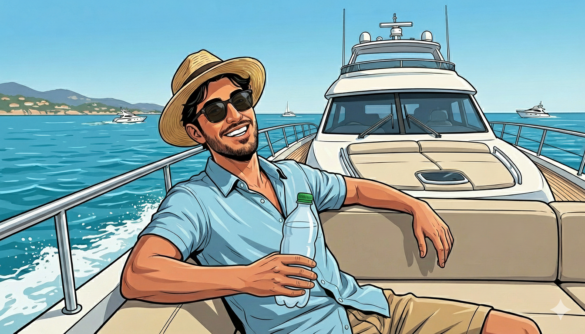

It's fun to be WIERD
and Unhinged

Calm SEA
The sea is where I slow down and think clearly. Surrounded by open water and endless horizons, I find perspective, freedom, and calm. It reminds me to stay relaxed, adaptable, and open to new directions, both in life and in my work.

Another HOBBY
Behind the counter, I enjoy the process as much as the result. This hobby teaches me patience, focus, and consistency. Creating something by hand, step by step, keeps me grounded and sharpens my attention to detail.